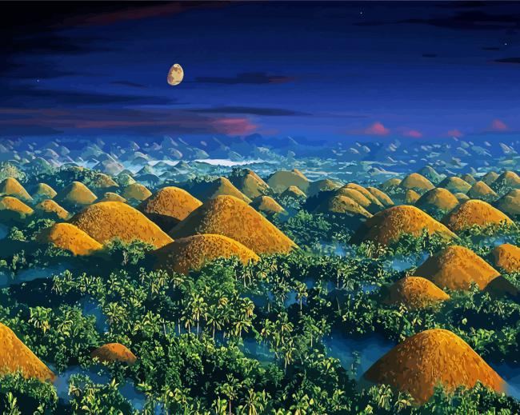
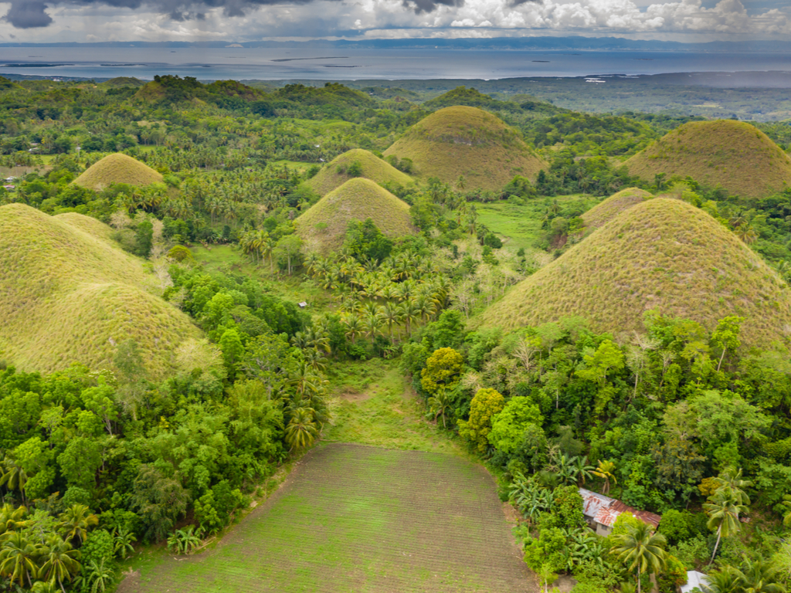
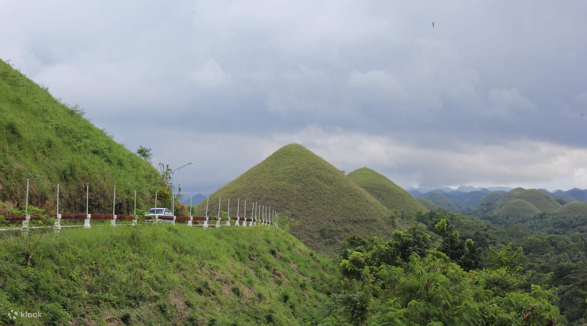

HOME
*Philippines Best Spots*
Welcome to the Pearl of the Orient Seas
The Chocolate Hills showcase its iconic chocolate brown look during the dry months of January to May. During the rainy season, the hills' grass turns into a vibrant green, giving them that mint chocolate color. More travelers visit during the dry season when the hills appear exactly as it's called.
Without a doubt, Bohol’s most iconic tourist attraction is the Chocolate Hills. This geological wonder made up of thousands of conical hills has even made it to the PHP200 bill (currently the rarest banknote in the country) along with another Bohol icon, the Philippine tarsier. For a hassle-free experience, the best way to see these hills is through Chocolate Hills tours. In this guide, you’ll find everything you need to know to plan your visit.



Back